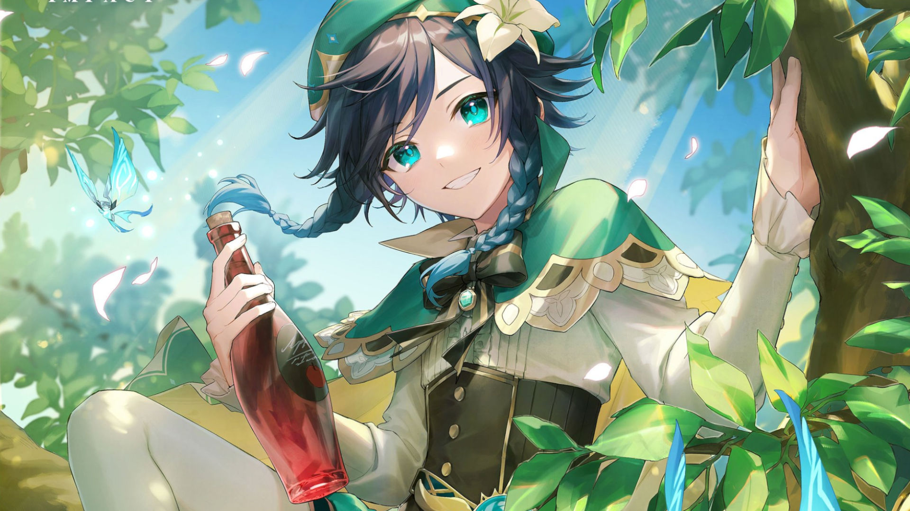

Venti, el "Bardo Itinerante"
Es un bardo de espíritu libre y amante del vino en Mondstadt y el actual recipiente mortal de Barbatos, el Arconte Anemo. Un bardo misterioso al que le gusta recitar tanto viejos poemas como nuevas canciones de moda. Le encantan las manzanas, el vino y los ambientes animados, odia el queso y es alérgico a los gatos. Puede manifestarse en forma de plumas y viento, seguramente debido a su obsesión por los objetos ligeros y voladores.
